|
Photoshop Curves 102Version 1.3, © 2006, 2007 by Dale Cotton, all rights reserved Miles Hecker has a very nice Curves 101 tutorial on Luminous Landscape. I urge you to read it before continuing if you're new to curves or rusty. In spite of Miles' and dozens of other Curves tutorials I keep reading that beginners and intermediates have endless trouble getting the hang of this exceedingly useful tool. Here are two slightly more advanced pointers that can keep you out of lots of hot water:
Let's look at this visually. Let's start with a basic three-point curve but drag the centre point a bit to the left: 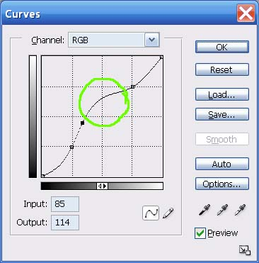 Fig. 1: Good curve Now let's drag the centre point upward: 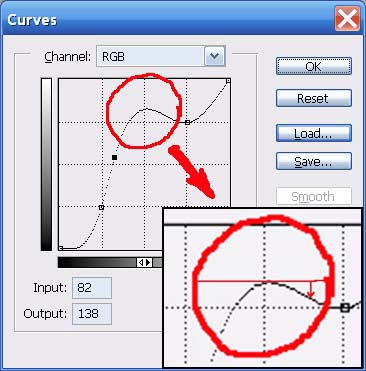 Fig. 2: Baaaad curve The bad curve is bad because part of it goes back down hill. This means there are brightness values that are duplicated on both sides of the hump. In fact, the closer any portion of the curve approaches being horizontal - let alone humping - the more of a miracle you are asking PS to pull off, and certainly the more you need to be in 16-bit mode: 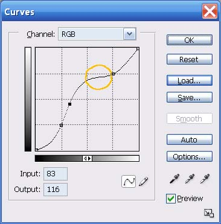 Fig. 3: Dicey curve. Now let's apply theory to practice. Here's a crop from a typical contrasty scene: 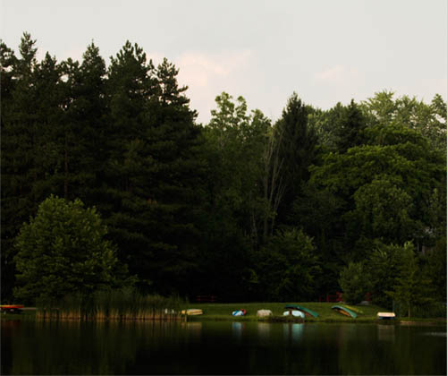 Fig. 4: Contrasty scene. The exposure was made to preserve some colour in the sky, which in turn caused the rest of the scene to appear dark, foreboding, and generally un-bourgeois. In order to open up the non-sky parts of the scene, we might apply a curve like so: 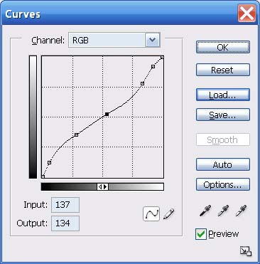 Fig. 5: Fairly aggressive curve to shed some light on the darkness. Don't be intimidated by all the control points in this curve. I started with the same three basic points shown in Miles' tutorial, then added two more – one close to the bottom and one close to the top. Which results in this: 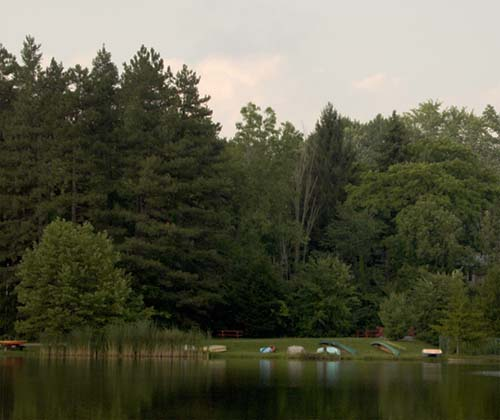 Fig. 6: Result of fairly aggressive curve. However, if we push the Curves tool too hard, as in the following curve: 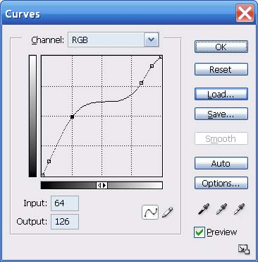 Fig. 7: Overly-aggressive curve to open shadow areas. We get the following: 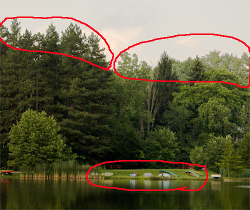 Fig. 8: result of overly-aggressive curve. Notice the areas circled in red. Colours that should be shades of green in the tree tops are instead shades of light grey. Similarly, two of the boats are now light grey instead of yellow. The culprit, of course, is the plateau area circled in amber: 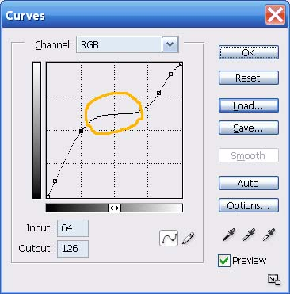 Fig. 9: Problem area. Given how much trouble a plateau or hump in a curve can cause, and all the grief novices must have needlessly suffered over the years with this, one has to wonder why the Photoshop dev team never added an optional limiter or warning mechanism to this tool ... Reduce speed – sharp curve ahead... Under the hoodDisclaimer: I have never worked on the Photoshop dev team, so what I'm presenting here is my best guess as to how Curves work. I find it more useful to understand the underlying concepts of a situation than to blindly apply rote rules. The underlying concepts of the Curves tool are not that difficult, so see if you can bear with me a bit longer. The Curves tool is a simple graph; the vertical axis being the existing brightnesses of the current image; the horizontal axis being the desired new brightnesses. Every pixel in a colour image has a specific colour, but it also has a specific degree of darkness or lightness: for example, navy blue is darker than fire engine red but lighter than midnight black. The initial diagonal line simply says that each brightness value from black at the bottom to white at the top will be multiplied by 1.0000 to arrive at the corresponding new brightness value for all pixels in the image that had a given original brightness. 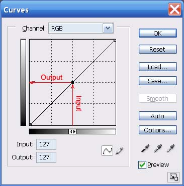 Fig. 10: What goes in must come out. 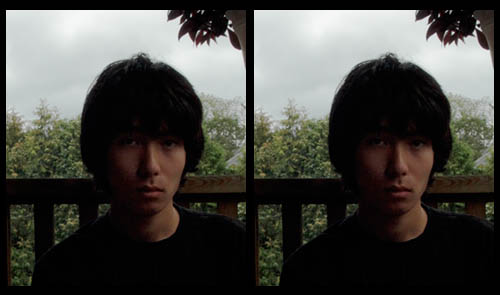 Fig. 11: Fig. 10's "curve" applied to an image: no change. In Fig. 10 I show what happens to any given brightness value – in this case I chose the exact halfway brightness point - when using the original "curve" (diagonal line). Namely: nothing; 127 multiplied by 1.000 equals 127. If instead we modify the Curve line in some way, we change the multiplier for most or all brightness values. In the next figure I start with the same centre point but this time drag it to the left until it is half way to the left edge: 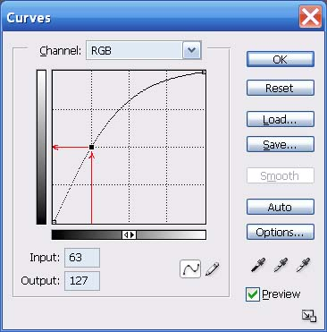 Fig. 12: Doubling a brightness level. 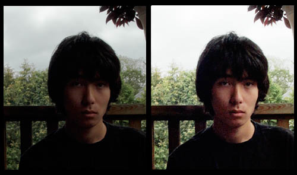 Fig. 13: Fig. 12's "curve" applied to an image: the brights get brighter. This doubles the brightness of all input values of 63 – IOW, the input value of 63 gets multiplied by 2.0. Problems start when we ask the Curves tool to multiply brightness values that are close to identical – such as 127 and 128 – by nearly identical multipliers, such as 0.998 and 0.999. If we are working in 8-bit RGB mode, any given brightness value is something between 0 and 255. 127 times 0.998 is 126.746, which has to be rounded off to the nearest whole number, or 127. Similarly, 128 times 0.999 gives 127.872, which rounds back to 128. No change. However, if we are in 16-bit mode, the underlying brightness values go from 0 to 65535, which gives us the equivalent of more decimal places to work with. Thus, 127 times 0.998 will be stored as something close to 126.746; and 128 times 0.999 will be stored to something like 127.872, so the fine distinction we're trying to make is preserved.
Even from this simple example we begin to see the reason why it's so important to do as much editing in 16-bit mode as possible. The more radically you alter the colours or contrast in the original image, the more important it becomes to preserve small distinctions. The difference between 126.746 and 127 can be the difference between the sort of grey-out we saw in Fig. 8 and no grey-out. This is because a grey-out happens when the slight value differences between neighbouring regions get lost. We can also begin to see the reason for the second prescription:
A hump, as shown in Fig. 2, above, asks the curve tool to turn more than one input brightness value into an identical output brightness (two or more points at the same elevation on each side of the hump). In this case it doesn't matter what bit level we're working at, the hump guarantees a grey-out will occur. Similarly, if a region of the curve approaches flatness, as in Fig. 3, even in 16-bit mode the distinctions between successive output values become so small that a grey-out becomes ever more likely. 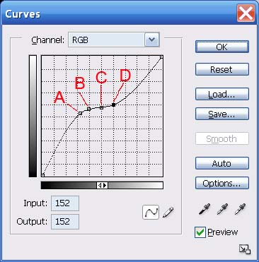 Fig. 14: Problem curve. 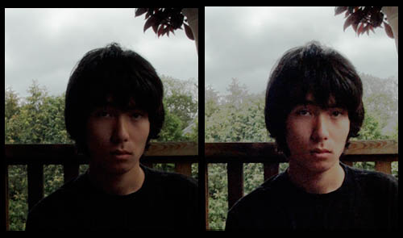 Fig. 15: Fig. 14's "curve" applied to an image: a fatal grey-out. In Fig. 14 I've marked 4 points as follows:
We can see the results of this too-flat curve in Fig. 15. Even though the output brightnesses are numerically distinct in the four marked sampled points, it's the many points between the samples that fail to maintain distinction. Incidentally, we've concentrated on horizontal flat-lining so far, but vertical flat-lining results in exactly the same grey-out problem – it's just much harder to get the Curves tool to go vertical (try it). OK. We've literally frowned on the big bad hump in the middle of a curve, but what really happens when we go there? 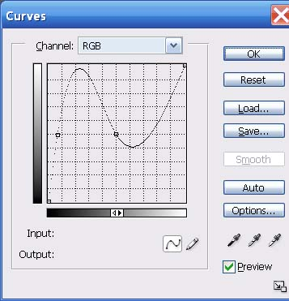 Fig. 16: Over the top curve. 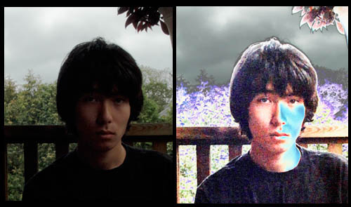 Fig. 17: Fig. 16's "curve" applied to an image: solarization from beyond the grave. Clearly, all Hades breaks loose when you not only double, but triple, the outputs for a given range of inputs. The visual equivalent of the feedback howl when the speaker gets too close to the mike.
|